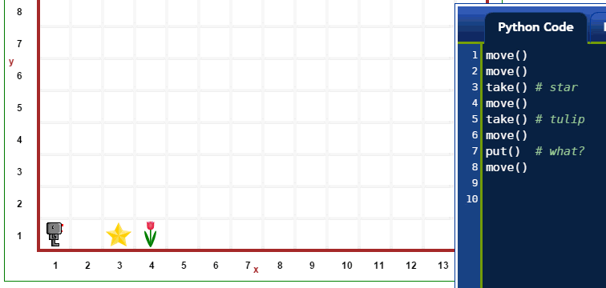
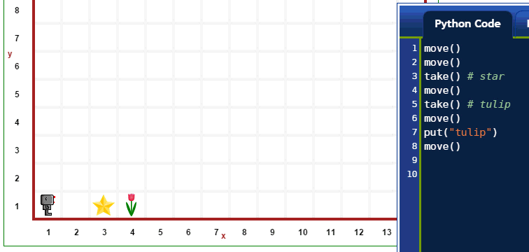
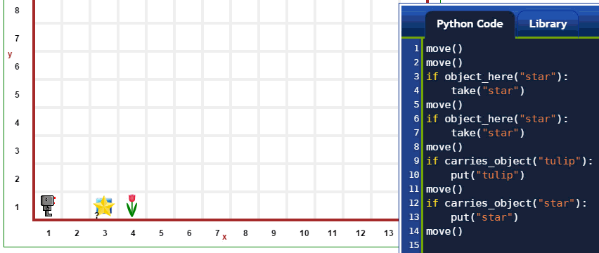
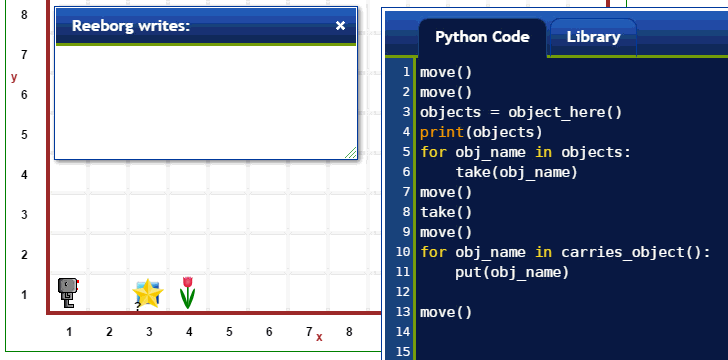
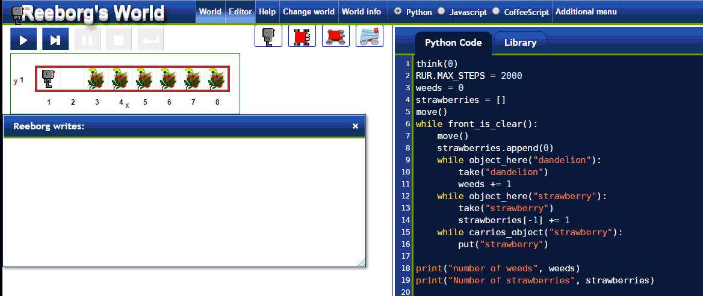

Warning
This document is in the middle of a major revision. Some sections might be missing text, or have French text as placeholder.
한가지 이상 객체 유형을 갖게 되면 자연스러운 방식으로 고급 프로그래밍을 학습할 수 있게 된다. 다음에 어떻게 가능하지 간략하게 살펴보자.
지금까지 살펴봤듯이, 리보그가 객체를 take() 혹은 put() 하도록 지시받으면,
단지 한가지 유형의 객체만 있기 때문에, 모호성이 전혀 없이 작업을 수행할 수 있다.
하지만, 리보그가 다른 유형의 객체를 두개 (그 이상) 지니고 다니면서,
객체를 put() 해서 놓도록 지시하면 어떨까?

위에서 보듯이, 상기와 같이 지시하면, 리보그가 불평하게 된다. 리보그가 작업을 적절하게 완수하려면, 함수 *인자(argument)*를 사용해서 어떤 유형의 객체인지 명세할 필요가 있다 - 이 경우에, 객체명을 갖는 파이썬 문자열로 명세한다.

take() 와 put() 명령어는 객체 명칭을 갖는 파이썬 문자열을 인자로 받는다.
추가로, 다음 예제에서 볼 수 있듯이,
object_here() 와 carries_object() 도 동일하다.

상기 세상에서 동일 장소에 두가지 유형의 객체 (별과, 정사각형)가 있음에 주목한다: 이 경우에, 물음표가 객체 숫자를 나타내는 정수 대신에 나와있다. 해당 지점에 정확한 객체 숫자에 관한 정보는 상단에 “World info” 버튼을 클릭하고 나서, 해당 지점에 객체 이미지를 클릭해서 얻어낼 수 있다.
object_here() 와 carries_object() 명령어가 파이썬 리스트를 반환하는데,
빈 리스트는 ``False``와 동등하게 처리된다.

상기 함수에 추가해서, 리보그 세상에 다른 함수는 하나 혹은 그이상 인자를 받을 수 있다.
예를 들어, pause() 명령어를 살펴봤다:
인자 없이 사용될 때, 리보그가 다시 이동하려면, “run” 혹은 “step” 버튼을 사용자가 클릭해야 된다.
하지만, 정수를 인자로 넣을 수 있고, 1000분의 1초로 해당 숫자만큼 멈추게 된다.
따라서, 1초 동안 멈추려면, pause(1000) 와 같이 작성한다:
for i in range(3):
turn_left()
상기 코드는 초보자에게 즉각적으로 명확하지는 않다. 자바스크립트로 작성하면 상황은 더욱 심각해진다:
for (var i = 0; i < 3; i++){
turn_left();
}
대조적으로, 귀도 반 로봇 (http://gvr.sourceforge.net) 미니 언어를 사용하면, 동일한 내용으로 상기 코드를 다음과 같이 단순히 작성할 수 있다:
do 3:
turnLeft
Note
파이썬으로 repeat 을 상대적으로 단순하게 구현하면 다음과 같다:
def repeat(fn, n):
for i in range(n):
fn()
함수 repeat() 이 리보그 세상에 단순성을 나타내려는 노력으로 포함되어 있따.
따라서, 왼쪽 세번 회전을 하려면, 다음과 같이 작성한다:
repeat( turn_left, 3)
사용자에게 정보를 의사소통하는데, 리보그는 파이썬 print() 함수를 사용한다.
print() 함수 출력값이 html 미리 정의된 서식요소(preformatted element)로 나타난다.
이를 통해 줄바꿈과 기타 공백이 적절하게 재현되도록 확실히 하게 된다.
또다른 함수 narration() 은 인자로 어떤 html 코드로 받을 수 있고 출력도 할 수 있다.
기본 디폴트 설정으로, narration() 출력결과는 파란색으로 표식되지만,
사용자가 친숙한 html, css 조합으로 변경될 수 있다.
위에서 언급된 object_here() 와 carries_object() 에 추가해서,
리보그 세상이 리스트로 작업할 수 있는 엄청난 가능성을 제공한다.
예를 들어, 리보그가 격자에 진열된 객체를,
동일한 격자 구조를 유지한 채, 새로운 지점으로 옮기도록 할 수 있다:
이 작업을 리스트에 대한 리스트로 수행할 수 있다.
아래에, 예제를 시연하고 있는데, 리보그가
임의 잡초 갯수(0에서 3)와 딸기 갯수(1에서 10)가 각 지점에서 발견되도록 세상을 설계했음에 주목한다; 잡초와 딸기 갯수는 매번 임의로 선정된다.
아래 예제에서 주목할 점이 몇가지 있다:
RUR.MAX_STEPS 값을 기본 디폴트 설정값 1,000에서 2,000으로 증가시켰다;종종 작업을 완수하기 전에 멈추는 것을 알게 되었다. 리보그 프로그램이 실행되는 방식이 화면에는 어떤 것도 보여지지 않고, 매우 빠르게 먼저 실행된다. 실행되는 동안에, 다양한 명령어가 한번에 하나씩(혹은 역순으로) 재생될 수 있는 “프레임(frame)”을 기록해서, 사용자가 볼 수 있는 애니메이션을 생성한다. 만약 프레임 기록 횟수가 최대값을 넘게되면, 프로그램은 정지한다: 이 기능이 무한 루프를 방지하도록 돕는다.
think(0) 명령어를 사용해서 애니메이션을 매우 빠르게 진행시켜 코드가 강조되어 하이라이트 되는기능을 비활성화 시킨다.
딸기 값이 1에서 10이 됨이 나타난다.
매번 임의 방식으로 작업이 수행된다.

만약 매우 관찰력이 좋다면, 리보그에서 사용되는 폰트가 이전 예제 폰트와 다름에 주목한다. 이 문서를 작성할 때, 이전 폰트는 로봇에 좀더 적합한 것으로, ``{}`` 같은 특정 문자가 가독성이 떨어지는 것을 저자가 뒤늦게 인식하게 되었다. 가독성은 프로그래밍에서 매우 중요하다. 이상적인 폰트에 대한 탐색은 계속된다...
앞에서 살펴봤듯이, 리보그는 북쪽을 향하고 있느지 ... 아닌지 판단할 수 이따. 하지만, 다른 방향을 향하도록 알아내도록 도움을 줄 수 있다. 예를 들어, 리보그가 남쪽을 향하고 있다면, 왼쪽으로 두번 회전을 하면, 북쪽을 향하게 됨을 알고 있다. 두번 더 왼쪽으로 회전하게 되면, 리보그가 원래 향하고 있는 방향으로 되돌아 오게 된다. 이런 추론을 통해 다음이 제시된다:
def is_facing_south():
turn_left()
turn_left()
remember = is_facing_north()
turn_left()
turn_left()
return remember
거의 틀림없이 다소 조약하지만, 어쨌든 동작한다.
left_is_clear() 함수를 작성하는데 유사한 방식으로 작업할 수도 있다.
repeat() 함수에 사용된 아이디어를 연장해서,
다음과 같은 작업을 수행하는데, 더 현명한 방식으로 ``return``을 사용할 수 있다:
def do_while(fn, condition):
def until():
while condition():
fn()
return until
walk_to_the_wall = do_while(move, front_is_clear)
walk_to_the_wall()